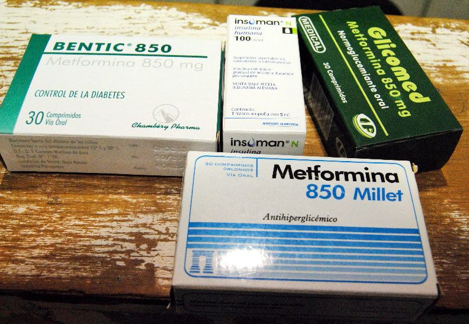

Un nuevo método para tratar la diabetes de los Estados Unidos permite lograr la remisión de la enfermedad en el hogar
Saludos, mi nombre es Daniel Uribe Cortés. Soy un endocrinólogo, especialista en el campo del diagnóstico, el tratamiento de la diabetes mellitus y sus complicaciones.
Me escriben a mi correo y Facebook constantemente personas con diabetes. Algunos estaban en pánico porque les diagnosticaron diabetes y ahora sus vidas han cambiado drásticamente. Otros se observaron en especialistas poco calificados y llevaron la enfermedad a un estado grave.
Pero tengo buenas noticias para ustedes: con esta enfermedad también pueden vivir felices para siempre. Qué debemos hacer, qué tratar y qué mitos dejar de creer, lo diré en este artículo.
¿Qué pasa si no se trata de la diabetes?
Comenzaré con que la diabetes debe tratarse. No es suficiente reducir el consumo de azúcar y normalizar la nutrición por un tiempo. Si la enfermedad ya está diagnosticada, es importante comenzar el tratamiento lo antes posible. La diabetes mellitus conduce a una disminución significativa de la inmunidad. El paciente sufre con mayor frecuencia enfermedades que a menudo pasan a una forma crónica. El tejido nervioso, los vasos sanguíneos se ven afectados, la curación de cortes y abrasiones se deteriora.
La diabetes estimula el desarrollo de la aterosclerosis, afecta los vasos oculares, lo que conduce a una visión deficiente, los riñones, interrumpe el suministro de sangre a la piel. Si no se trata esta enfermedad, los trastornos en el cuerpo conducen al síndrome del pie diabético.
El pie, debido a su posición periférica, resulta ser el más vulnerable: los cambios patológicos causados por la diabetes conducen a procesos inflamatorios, la aparición de úlceras, necrosis tisular. En este caso, estamos hablando de amputación.
Es hora de olvidar estos tratamientos
Los métodos habituales de tratamiento de la diabetes – terapia de insulina y medicamentos reductores de azúcar – tratamiento no se puede llamar.Es un soporte vital para un período determinado, pero nada más.
Con el tiempo, el cuerpo se acostumbra a las drogas, es necesario seleccionar sustancias activas más fuertes, a las que el cuerpo tarde o temprano también se acostumbrará. Si no está bajo el control constante de un médico, el momento en que todos los medicamentos dejan de funcionar le llegará inesperadamente.
8 de cada 10 casos son fatales. Esto se debe al hecho de que los picos de azúcar después de tomar medicamentos potentes son excesivamente altos – más de 20 mmol/L. Si no se hospitaliza a la persona a tiempo, en unas pocas horas se desarrolla un pre-coma, seguido por un coma hiperosmolar. Las posibilidades de sobrevivir después de un coma son 50/50.
Cada año, 2,2 millones de diabéticos mueren antes de vivir hasta los 50 años.

Es muy difícil elegir un tratamiento farmacológico efectivo y seguro, debe estar bajo control constante de un endocrinólogo altamente calificado, someterse a pruebas y ver cómo el cuerpo reacciona a ciertas sustancias.
A fines de 2020, surgió una forma alternativa de tratar la diabetes que ha demostrado ser altamente efectiva en el control de la diabetes mellitus y ha ganado confianza tanto en pacientes como en los principales endocrinólogos de México. Lo discutiremos a continuación.
Avance científico
Los principales especialistas de los Estados Unidos han desarrollado un medicamento radicalmente nuevo que ha invertido completamente todas las ideas sobre el tratamiento de la diabetes. Publicaron estadísticas después de las cuales el medicamento entró inmediatamente en práctica en muchas clínicas de los Estados Unidos y Europa.
Extracto de los resultados del estudio:
Durante 30 días, un grupo de 1.149 personas con diabetes tipo 2 tomaron bajo la supervisión 24/7 de un grupo de médicos de diferentes especialidades. Tales medidas se tomaron debido al hecho de que los participantes del estudio no tomaron otros medicamentos que regulan el azúcar en la sangre durante el ensayo clínico.
Según el resultado del estudio, el 98% de los participantes entraron en remisión (una condición en la que el diabético no requiere terapia reductora de azúcar dura al menos 1 año) el 97% de los participantes dejó de observar picos agudos y altos de azúcar en la sangre después de una semana de tomar el 100% de los participantes no experimentaron ninguna complicación de la diabetes durante un año y medio
¿Cómo funciona ?
La forma en que se creó el remedio jugó un papel importante en su eficacia final. Los científicos han sintetizado a partir de componentes naturales sustancias que restauran naturalmente la susceptibilidad de las células a la insulina y regeneran las células pancreáticas dañadas, mejorando así su correcto funcionamiento y equilibrio hormonal.
El remedio reduce efectivamente la resistencia a la insulina, aumenta la captura de glucosa por los músculos y el tejido adiposo y ralentiza la producción de glucosa a partir de proteínas y grasas. Reduce la absorción de glucosa en el intestino, por lo que el exceso de azúcar no entra en la sangre.
Además, el remedio reduce el colesterol en la sangre, normaliza el metabolismo, alivia la inflamación, previene el desarrollo de tumores y sana el sistema cardiovascular, combate todos los efectos de la diabetes. debido a su amplia acción, no es necesario tomar otros medicamentos en paralelo.
En 2021, este remedio comenzó a fabricarse en pequeños lotes en México bajo el nombre comercial .
Mi experiencia con
Hice mi propia investigación como parte de la práctica endocrinológica y me convencí personalmente de la efectividad de . Con ese fin, organicé pruebas de glucosotolerantes. La conclusión fue que por la mañana, con el estómago vacío, el paciente que tomaba bebía una solución de glucosa y nada más. En la diabetes tipo 2, durante tales pruebas, los pacientes tienen un aumento en el azúcar en la sangre ya en la primera media hora. En el caso de mis pacientes, el nivel de azúcar durante el día se mantuvo dentro de la norma permitida.

Un ejemplo más específico de mi práctica: hace 11 meses, una paciente de Rebeca (nombre indicado con su permiso) fue ingresada en el hospital en estado grave. El cuadro clínico fue terrible: gran exceso de peso, quejas de visión borrosa, dolor en las piernas e impotencia total. En ese momento, su azúcar no caía por debajo de 17 mmol/L, la condición era tal que si no comenzaba el tratamiento ahora, en 5-10 días habría muerto.
El principal problema en su tratamiento fue el siguiente: después de bajar el azúcar en la sangre a valores normales, volvió a subir a un nivel crítico unas horas más tarde.
Sin pensarlo dos veces, se tomó la decisión de asignar el curso . Bajo estrecha vigilancia, tomó el remedio, bebió suficiente agua y dejó los alimentos dañinos. Las mejoras se notaron ya en los 5 días de admisión. Para su difícil condición, fue un gran logro. El azúcar ya no se elevó por encima de 8 mmol/L, comenzó a hablar más e incluso a veces miró una sonrisa en su rostro.
Poco a poco se fue recuperando, a las 4 semanas fue enviada a casa, donde terminó el curso . cada dos semanas, ella viene a hacerse las pruebas, que hasta la fecha están en perfecto orden. ¡Ahora Rebeca no toma ningún medicamento y ha perdido 15 kg!
Es hora de comenzar el tratamiento
La buena noticia es que puede comenzar el tratamiento de la diabetes con en este momento.Este medicamento es absolutamente seguro, no tiene contraindicaciones y se vende sin receta.
Por ahora, solo se puede comprar en el sitio web oficial directamente del fabricante o directamente aquí rellenando el formulario. no ha llegado a las farmacias de México. Por favor, cualquier persona que haya tomado o esté tomando este remedio actualmente, deje un comentario al respecto en los comentarios.
Les deseo mucha salud, a sus familiares y amigos, porque solo con salud podemos vivir una vida plena y feliz.
Por fin nos llegó un remedio eficaz para la diabetes
Estaba sufriendo con esa diabetes del carajo, ya me tenía sin fuerzas. Probé muchas drogas, métodos de tratamiento, vi a una docena de médicos, todo pa nada. Siempre tenía altibajos de azúcar, desgano, dolor de cabeza. Solo tuve que comenzar a beber y dejé de notar problemas de salud.
Llevo tomando 4 el , me siento súper, el azúcar ya está casi normal, se fue la sed. Siento que estaré aún mejor después
Sólo se puede pedir en el sitio web oficial?
Sí. Yo fui a ver en todas las farmacias, ni siquiera conocen este medicamento. Lo ordené aquí, todo llegó completico y en la cantidad correcta para mí.
El Dr. Néstor Martínez habla lo correcto sobre los remedios, me han causado problemas renales. Ahora debo tratarme para eso. Voy a dejar todas esas drogas y me pasaré a .
Mi vida después de tomar se dividió en un "antes" y un "después": vivía constantemente en el hospital, me hospitalizaron varias veces debido a la mala salud, hice dietas estrictas y no tomaba alcohol en absoluto. Ahora es como si volviera a tener 18 años: estoy fuerte, saludable, a veces bebo y como casi lo que quiero. El azúcar está normal, rara vez se sube a 7 mmol/L, pero luego vuelve a caer.
Mantengo mi azúcar reducido en sangre todos los días desde que comencé a tomar . Los análisis muestran que ha bajado poco a poco, gradualmente, algo más lento que con los otros productos pero es porque no tiene químicos. Lo tomo según las instrucciones.
Si tiene muy subida el azúcar y decide comenzar a beber , entonces al comienzo del tratamiento, haga seguimiento estricto de la nutrición. El azúcar baja poco a poco, pero no de inmediato. Pero el efecto es acumulativo. Me hice el tratamiento hace 3 meses, ahora no tomo nada, no mida nada. En promedio, tengo el azúcar en 4,7-5,9 mmol
No es muy cómodo que un frasco tenga solo 20 tabletas. Tuve que comprar varios frascos
Se hace esto para no tener que pagar de más. Cada persona necesita beber una cantidad diferente de tabletas. Para mí, un frasco es suficiente con un frasco, por ejemplo.
compré la primera vez para probar, mi esposo tiene diabetes tipo 2. Lo está tomando la segunda semana. incluso noté mejoras sin medir el azúcar. dice que es la mejor droga que ha bebido. me pide que compre más
Recibí un descuento en el sitio web oficial, me pedí dos tratamientos de una vez. Antes de comprar , me consultaron, me contaron todo y respondieron todas las preguntas. Quedé muy satisfecho con el servicio.
Me tomé casi la mitad del curso, no puedo no estar dichoso. Comencé a dormir normalmente, dejé de comer constantemente, mi azúcar en la sangre oscila entre 5,2 y 6,3. Tendía a subirse a menudo hasta 10. Así que si tiene un efecto!
Deje sus comentarios:
Su comentario está en moderación